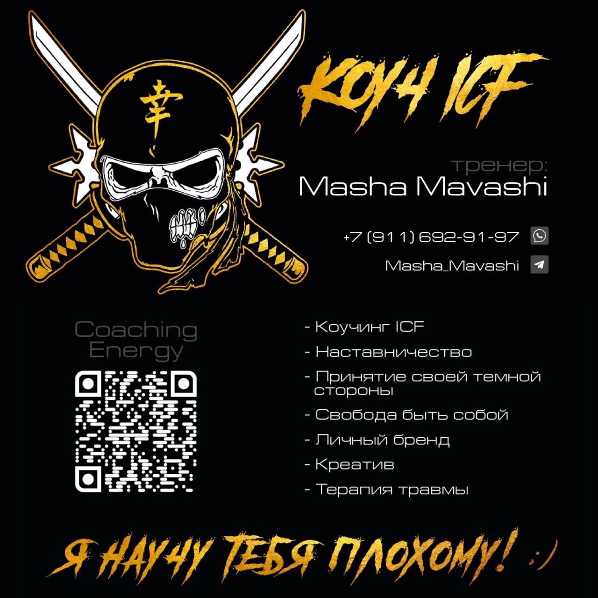
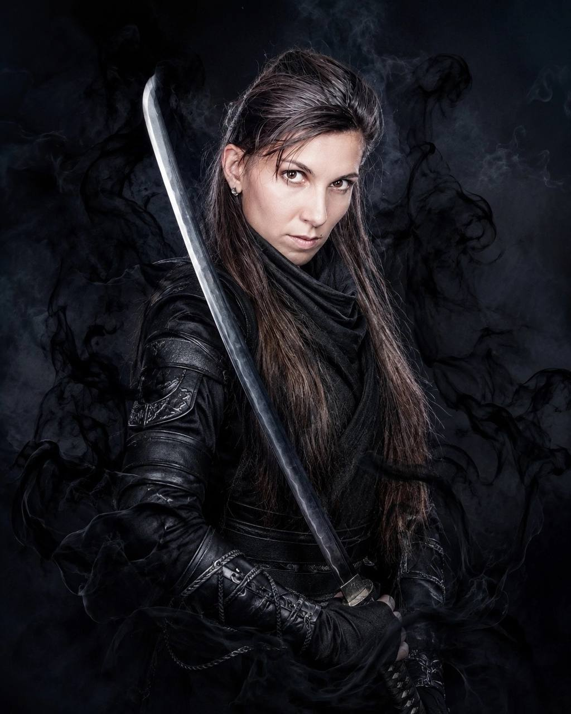

Обратите внутреннюю тьму в сильный ресурс
Первичная консультация с Машей Маваши — тренером для сильных лидеров и коучем ICF. Разберём вашу ситуацию и поймём, с чего начать.

Знакомо?
Если вы узнали себя хотя бы в одном пункте — эта консультация для вас.
Дел так много, что убрать из списка нужно всё — но вы не можете себе этого позволить, потому что от вас зависят люди.
Вы лидер с мощным видением, но вложить миссию и ценности в головы других сложно. Между вами и командой — разрыв.
Задачи некому доверить. Вы понимаете, что без отпуска и передачи дел проект держится только на вас.
Вы эксперт, у вас богатый опыт, но вы не можете чётко сказать, кто вы, для кого работаете и чем полезны. Опыт остаётся неупакованным.
Вы привыкли давить в себе гнев, жёсткое «нет» и желание отстоять границы — и подозреваете, что тратите на это силы.
Постоянное напряжение из-за перфекционизма и погони за результатом.
Дело не в том, что вы «слабый». Дело в том, что вы прячете свою силу
То, что мы отвергаем в себе, никуда не исчезает.
Гнев, агрессия, жёсткое «нет», деловой подход — мы привыкли считать это «неприглядным» и запихивать в чулан. Но Маша Маваши называет это грандиозным ресурсом, который позволяет жить и добиваться нового.
«Лидер по природе агрессивен. С этим нужно уметь работать и проживать это этично, а не давить».
Без кризиса нет развития. Без внутреннего конфликта нет развития. Детский сад, где все счастливы и у всех всё есть, — это не место, где что-то растёт. Именно неприглядные моменты делают нас лучшей версией себя.
Похожая картина с делегированием: у лидера есть видение, но нет «промежуточного звена» — 3–4 человек, каждый из которых отвечает за свой сегмент. Пока этого звена нет, всё держится на вас.
тратите силы
получаете ресурс →
Я не учу быть удобным. Я помогаю услышать себя
Принятие тёмной стороны — основа вашей силы.
Ко мне приходят за силой. Не за инструментами и не за красивой упаковкой, а за внутренней силой и целостностью, которые появляются в процессе работы. Я смотрю на человека настоящим — таким, какой он есть, — и принимаю его таким. В этой работе он сам начинает принимать себя.
Коучинг идёт в глубину ценностей. Поэтому мы можем выйти на блоки, установки и семейные сценарии. Я не терапевт и не позиционирую себя так, но глубинные вопросы в работе возникают, и я понимаю, как с ними обращаться.
Обращение внутренней тьмы в сильный ресурс.

Маша Маваши
Тренер для сильных лидеров. Сертифицированный коуч ICF. Автор групповых программ, социальных проектов и личных брендов.
Я работаю как индивидуальный эксперт 8–10 лет. Люди начали приходить ко мне сами, и однажды я поняла: пора упаковывать себя как эксперта, а не работать на кого-то.
Раньше я работала наёмным сотрудником: готовила персонал, обучала новым инструментам в продажах, управлении, маркетинге и СМИ, занималась формированием продукта. Я опытный пиарщик, за плечами социальные проекты и PR-акции. Теперь этот опыт я переношу в работу с экспертами и лидерами.
Моя сильная сторона — групповой и командный коучинг. Я считаю, что проект создаёт команда, а не одиночка.
Мне не нужны проекты без людей, с командой мы построим любой.
Клиент в приоритете, а не деньги.
За репутацию и качество продукта.
«Люди приходят ко мне за силой. Я просто вижу в них настоящих — и принимаю».
С чем можно прийти
Консультация поможет понять, какой формат подходит именно вам.
Как чётко сказать «от этого забора и до этого», не оправдываясь.
Как слышать свои эмоции и работать с ними этично.
Практика, на которую большой запрос.
Групповая работа для команд и экспертов.
Понять, кто вы и для кого, и сделать опыт понятным клиенту.
Как выстроить промежуточное звено и освободить время для стратегии.
Что будет после того, как вы напишете
Простой и понятный путь без обязательств.
Вы оставляете заявку или пишете мне в мессенджер — я отвечаю лично.
Мы договариваемся о времени и формате.
На консультации вы рассказываете свою ситуацию, а я задаю вопросы.
Вы понимаете, с чем пришли на самом деле и с чего начать.
Вопросы, которые обычно возникают
Вы психолог или терапевт?
Нет. Я тренер и коуч ICF. Я не позиционирую себя как терапевта, но глубинные вопросы в работе возникают, и я понимаю, как с ними обращаться.
У меня нет чётких вопросов, только ситуация. Это нормально?
Да. Обычно так и приходят: «Вот такая ситуация. Маша, помогите». Начнём с неё.
Как записаться?
Оставьте заявку в форме или напишите мне в мессенджер, я отвечу.
Что делать, если я не знаю, чего хочу?
Мы начнём именно с этого. Люди приходят, чтобы услышать себя.
Это подходит только предпринимателям?
Основная аудитория — эксперты, предприниматели и лидеры. Подходит ли формат вам, мы поймём на консультации.
Услышьте себя. Начните с первой консультации
Расскажите о своей ситуации — я отвечу лично.
Вы можете делать вид, что тёмная сторона вас не касается. Или принять её и опереться на неё. Первый шаг — разговор. Оставьте заявку, и я свяжусь с вами.